CODING AGENTS AS PIXEL WORLD MODELS
traex/GPT-5.6-Sol · 0031
点击播放 · 原生 RGB 像素
逐轮保存的候选
回放视频、检查图与代码变化。
每份候选均可单独播放。实际图片检查记录在下方工具轨迹中。
候选 01播放与检查图
点击播放 · 原生 RGB 像素

展开代码变化
--- 上一保存版本
+++ 本次保存版本
@@ -0,0 +1,122 @@
+from pathlib import Path
+import cv2
+import numpy as np
+from PIL import Image
+import artifact_io
+
+ROOT = Path(__file__).resolve().parent
+
+
+def clean_plate(rgb):
+ """Remove the two balls and their soft cast shadows from the locked plate."""
+ bgr = cv2.cvtColor(rgb, cv2.COLOR_RGB2BGR)
+ mask = np.zeros(rgb.shape[:2], np.uint8)
+ # Shadows extend down-left from each ball under the lamp at upper right.
+ cv2.ellipse(mask, (108, 76), (25, 15), -18, 0, 360, 255, -1)
+ cv2.circle(mask, (120, 71), 12, 255, -1)
+ cv2.ellipse(mask, (174, 49), (24, 14), -18, 0, 360, 255, -1)
+ cv2.circle(mask, (186, 41), 12, 255, -1)
+ mask = cv2.dilate(mask, np.ones((5,5),np.uint8), iterations=1)
+ plate = cv2.inpaint(bgr, mask, 7, cv2.INPAINT_TELEA)
+ # A very light local smoothing removes inpaint boundaries while retaining wood grain.
+ soft = cv2.GaussianBlur(plate, (0,0), 0.75)
+ a = cv2.GaussianBlur(mask, (0,0), 2.0).astype(np.float32)[...,None] / 255.0
+ plate = (plate*(1-a) + soft*a).clip(0,255).astype(np.uint8)
+ return cv2.cvtColor(plate, cv2.COLOR_BGR2RGB)
+
+
+def alpha_over(dst, src, alpha):
+ aa = alpha[...,None].astype(np.float32)
+ return (src.astype(np.float32)*aa + dst.astype(np.float32)*(1-aa)).clip(0,255).astype(np.uint8)
+
+
+def draw_ball(frame, center, kind, phase=0.0, squash=0.0):
+ """Small shaded fuzzy tennis ball plus contact/cast shadow, rendered supersampled."""
+ scale = 4
+ H,W = frame.shape[:2]
+ hi = cv2.resize(frame, (W*scale,H*scale), interpolation=cv2.INTER_CUBIC).astype(np.float32)
+ cx,cy = center
+ X,Y = np.meshgrid(np.arange(W*scale)/scale, np.arange(H*scale)/scale)
+
+ # Cast shadow points down-left, matching the shadows visible in frame zero.
+ sx, sy = cx-8.0, cy+7.0
+ dx,dy = X-sx, Y-sy
+ shadow = np.exp(-0.5*((dx/12.5)**2 + (dy/5.2)**2))*0.34
+ # Keep the farther end especially soft.
+ hi *= (1.0-shadow[...,None])
+
+ # Tennis ball is about 8.5 px in radius in the source image. Subtle collision squash.
+ rx = 8.55*(1.0+squash)
+ ry = 8.55*(1.0-squash*0.65)
+ ux=(X-cx)/rx; uy=(Y-cy)/ry
+ rr=ux*ux+uy*uy
+ # anti-aliased fuzzy silhouette
+ alpha=np.clip((1.08-np.sqrt(np.maximum(rr,0)))/0.14,0,1)
+ inside=rr <= 1.13
+
+ # Sphere lighting: lamp comes from upper-left of each ball.
+ z=np.sqrt(np.maximum(0,1-np.minimum(rr,1)))
+ nx=ux; ny=uy
+ light=np.clip(-0.38*nx-0.54*ny+0.74*z, -0.35, 1.0)
+ light=(light+0.30)/1.30
+ if kind=='blue':
+ dark=np.array([2.,48.,112.]); bright=np.array([25.,103.,202.])
+ else:
+ dark=np.array([120.,151.,22.]); bright=np.array([211.,244.,69.])
+ col=dark[None,None,:]*(1-light[...,None])+bright[None,None,:]*light[...,None]
+ # Slight warm reflected light at the bottom edge.
+ col += (np.clip(uy,0,1)*z)[...,None]*np.array([5.,4.,0.])
+
+ # Curved, subdued tennis seam. It rotates with the rolling phase.
+ # A sinusoid gives a seam that visibly changes orientation without looking painted on.
+ ang=phase
+ xr= ux*np.cos(ang)+uy*np.sin(ang)
+ yr=-ux*np.sin(ang)+uy*np.cos(ang)
+ seam_y=0.48*np.sin(2.4*xr+0.55)
+ seam=np.exp(-((yr-seam_y)/0.055)**2) * (rr<0.90)
+ if kind=='blue': seam_col=np.array([40.,103.,167.])
+ else: seam_col=np.array([218.,235.,103.])
+ col=col*(1-0.22*seam[...,None])+seam_col[None,None,:]*(0.22*seam[...,None])
+
+ # Fine deterministic felt variation, strongest away from the highlight.
+ fuzz=(np.sin(X*11.7+Y*5.3)+np.sin(X*4.1-Y*13.9))*0.75
+ col += fuzz[...,None]*(alpha[...,None]*0.55)
+ hi = col*alpha[...,None] + hi*(1-alpha[...,None])
+ hi=np.clip(hi,0,255).astype(np.uint8)
+ return cv2.resize(hi,(W,H),interpolation=cv2.INTER_AREA)
+
+
+def make_frames():
+ first=np.asarray(Image.open(ROOT/'first_frame.png').convert('RGB'),dtype=np.uint8)
+ plate=clean_plate(first)
+ frames=[first.copy()]
+
+ # Centers measured from frame 00. The balls advance with equal speed along the
+ # pipe-to-pipe axis, touch around frame 9, then rebound elastically.
+ p_blue=np.array([120.0,71.0]); p_yellow=np.array([186.0,41.0])
+ axis=(p_yellow-p_blue); axis/=np.linalg.norm(axis)
+ contact_dist=17.2
+ initial_dist=np.linalg.norm(p_yellow-p_blue)
+ collide_t=8.0
+ speed=(initial_dist-contact_dist)/(2*collide_t) # equal image-plane speed
+
+ for i in range(1,20):
+ # Equal-mass head-on collision: velocities exchange, hence both rebound.
+ travel=speed*(i if i<=collide_t else (2*collide_t-i))
+ pb=p_blue+axis*travel
+ py=p_yellow-axis*travel
+ squash=0.10*np.exp(-0.5*((i-collide_t)/0.55)**2)
+ # During impact flatten both balls along collision direction; subtle at this scale.
+ f=plate.copy()
+ f=draw_ball(f,pb,'blue', phase=i*0.48, squash=squash)
+ f=draw_ball(f,py,'yellow',phase=-i*0.48+0.7,squash=squash)
+ # Fixed sensor-like softness/grain harmonizes analytic objects with source footage.
+ # Do not apply to frame zero, which must remain exact.
+ frames.append(f)
+ return np.stack(frames).astype(np.uint8)
+
+
+if __name__=='__main__':
+ frames=make_frames()
+ assert frames.shape==(20,144,256,3) and frames.dtype==np.uint8
+ artifact_io.save(frames,ROOT)
候选 02播放与检查图
点击播放 · 原生 RGB 像素
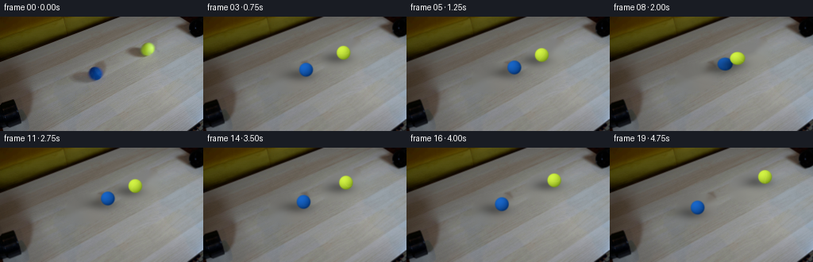
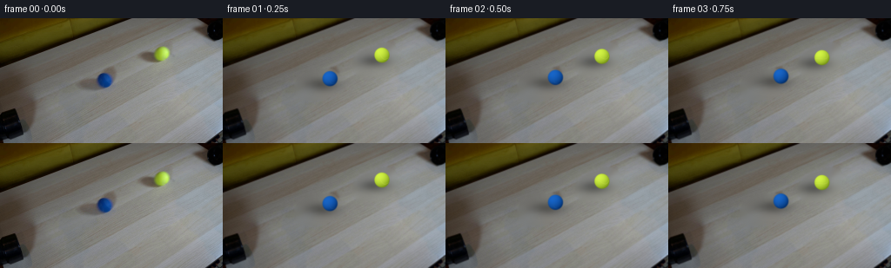
展开代码变化
--- 上一保存版本
+++ 本次保存版本
@@ -12,16 +12,12 @@
bgr = cv2.cvtColor(rgb, cv2.COLOR_RGB2BGR)
mask = np.zeros(rgb.shape[:2], np.uint8)
# Shadows extend down-left from each ball under the lamp at upper right.
- cv2.ellipse(mask, (108, 76), (25, 15), -18, 0, 360, 255, -1)
- cv2.circle(mask, (120, 71), 12, 255, -1)
- cv2.ellipse(mask, (174, 49), (24, 14), -18, 0, 360, 255, -1)
- cv2.circle(mask, (186, 41), 12, 255, -1)
- mask = cv2.dilate(mask, np.ones((5,5),np.uint8), iterations=1)
- plate = cv2.inpaint(bgr, mask, 7, cv2.INPAINT_TELEA)
- # A very light local smoothing removes inpaint boundaries while retaining wood grain.
- soft = cv2.GaussianBlur(plate, (0,0), 0.75)
- a = cv2.GaussianBlur(mask, (0,0), 2.0).astype(np.float32)[...,None] / 255.0
- plate = (plate*(1-a) + soft*a).clip(0,255).astype(np.uint8)
+ cv2.ellipse(mask, (108, 76), (27, 17), -18, 0, 360, 255, -1)
+ cv2.circle(mask, (120, 71), 13, 255, -1)
+ cv2.ellipse(mask, (174, 49), (26, 16), -18, 0, 360, 255, -1)
+ cv2.circle(mask, (186, 41), 13, 255, -1)
+ # Small-radius Telea continuation best preserves the directional tabletop grain.
+ plate = cv2.inpaint(bgr, mask, 3, cv2.INPAINT_TELEA)
return cv2.cvtColor(plate, cv2.COLOR_BGR2RGB)

可观测工具轨迹
实际执行的命令与返回图片。
命令 1exit 0
/bin/bash -lc "cat GENERATION_RULES.md && printf '\\n---PROMPT---\\n' && cat prompt.txt && printf '\\n---FILES---\\n' && find . -maxdepth 2 -type f -printf '%p %s bytes\\n' | sort"
命令 2exit 0
/bin/bash -lc "sed -n '1,240p' artifact_io.py && python - <<'PY'
import cv2, PIL, numpy, scipy
print('cv2',cv2.__version__)
from PIL import Image
im=Image.open('first_frame.png'); print(im.mode, im.size)
PY"命令 3exit 0
/bin/bash -lc "python - <<'PY'
from PIL import Image
im=Image.open('first_frame.png')
im.crop((85,25,215,95)).resize((780,420)).save('.tmp/balls.png')
im.crop((0,0,256,144)).resize((1024,576)).save('.tmp/full4x.png')
PY"命令 4exit 0
/bin/bash -lc "cat > .tmp/analyze.py <<'PY'
import cv2, numpy as np
im=cv2.imread('first_frame.png')[:,:,::-1]
for name,(x0,y0,x1,y1) in {'b':(95,50,140,90),'y':(155,22,207,67)}.items():
p=im[y0:y1,x0:x1]
hsv=cv2.cvtColor(p[:,:,::-1],cv2.COLOR_BGR2HSV)
# Actually p RGB conversion incorrect? print representative darkest/high saturation
sat=hsv[:,:,1]
ys,xs=np.where(sat>80)
print(name, 'bounds sat80', (xs.min()+x0,ys.min()+y0,xs.max()+x0,ys.max()+y0), 'count',len(xs))
idx=np.argsort(sat.ravel())[-20:]
print(p.reshape(-1,3)[idx])
PY
python .tmp/analyze.py"命令 5exit 0
/bin/bash -lc "cat > generate.py <<'PY'
from pathlib import Path
import cv2
import numpy as np
from PIL import Image
import artifact_io
ROOT = Path(__file__).resolve().parent
def clean_plate(rgb):
\"\"\"Remove the two balls and their soft cast shadows from the locked plate.\"\"\"
bgr = cv2.cvtColor(rgb, cv2.COLOR_RGB2BGR)
mask = np.zeros(rgb.shape[:2], np.uint8)
# Shadows extend down-left from each ball under the lamp at upper right.
cv2.ellipse(mask, (108, 76), (25, 15), -18, 0, 360, 255, -1)
cv2.circle(mask, (120, 71), 12, 255, -1)
cv2.ellipse(mask, (174, 49), (24, 14), -18, 0, 360, 255, -1)
cv2.circle(mask, (186, 41), 12, 255, -1)
mask = cv2.dilate(mask, np.ones((5,5),np.uint8), iterations=1)
plate = cv2.inpaint(bgr, mask, 7, cv2.INPAINT_TELEA)
# A very light local smoothing removes inpaint boundaries while retaining wood grain.
soft = cv2.GaussianBlur(plate, (0,0), 0.75)
a = cv2.GaussianBlur(mask, (0,0), 2.0).astype(np.float32)[...,None] / 255.0
plate = (plate*(1-a) + soft*a).clip(0,255).astype(np.uint8)
return cv2.cvtColor(plate, cv2.COLOR_BGR2RGB)
def alpha_over(dst, src, alpha):
aa = alpha[...,None].astype(np.float32)
return (src.astype(np.float32)*aa + dst.astype(np.float32)*(1-aa)).clip(0,255).astype(np.uint8)
def draw_ball(frame, center, kind, phase=0.0, squash=0.0):
\"\"\"Small shaded fuzzy tennis ball plus contact/cast shadow, rendered supersampled.\"\"\"
scale = 4
H,W = frame.shape[:2]
hi = cv2.resize(frame, (W*scale,H*scale), interpolation=cv2.INTER_CUBIC).astype(np.float32)
cx,cy = center
X,Y = np.meshgrid(np.arange(W*scale)/scale, np.arange(H*scale)/scale)
# Cast shadow points down-left, matching the shadows visible in frame zero.
sx, sy = cx-8.0, cy+7.0
dx,dy = X-sx, Y-sy
shadow = np.exp(-0.5*((dx/12.5)**2 + (dy/5.2)**2))*0.34
# Keep the farther end especially soft.
hi *= (1.0-shadow[...,None])
# Tennis ball is about 8.5 px in radius in the source image. Subtle collision squash.
rx = 8.55*(1.0+squash)
ry = 8.55*(1.0-squash*0.65)
ux=(X-cx)/rx; uy=(Y-cy)/ry
rr=ux*ux+uy*uy
# anti-aliased fuzzy silhouette
alpha=np.clip((1.08-np.sqrt(np.maximum(rr,0)))/0.14,0,1)
inside=rr <= 1.13
# Sphere lighting: lamp comes from upper-left of each ball.
z=np.sqrt(np.maximum(0,1-np.minimum(rr,1)))
nx=ux; ny=uy
light=np.clip(-0.38*nx-0.54*ny+0.74*z, -0.35, 1.0)
light=(light+0.30)/1.30
if kind=='blue':
dark=np.array([2.,48.,112.]); bright=np.array([25.,103.,202.])
else:
dark=np.array([120.,151.,22.]); bright=np.array([211.,244.,69.])
col=dark[None,None,:]*(1-light[...,None])+bright[None,None,:]*light[...,None]
# Slight warm reflected light at the bottom edge.
col += (np.clip(uy,0,1)*z)[...,None]*np.array([5.,4.,0.])
# Curved, subdued tennis seam. It rotates with the rolling phase.
# A sinusoid gives a seam that visibly changes orientation without looking painted on.
ang=phase
xr= ux*np.cos(ang)+uy*np.sin(ang)
yr=-ux*np.sin(ang)+uy*np.cos(ang)
seam_y=0.48*np.sin(2.4*xr+0.55)
seam=np.exp(-((yr-seam_y)/0.055)**2) * (rr<0.90)
if kind=='blue': seam_col=np.array([40.,103.,167.])
else: seam_col=np.array([218.,235.,103.])
col=col*(1-0.22*seam[...,None])+seam_col[None,None,:]*(0.22*seam[...,None])
# Fine deterministic felt variation, strongest away from the highlight.
fuzz=(np.sin(X*11.7+Y*5.3)+np.sin(X*4.1-Y*13.9))*0.75
col += fuzz[...,None]*(alpha[...,None]*0.55)
hi = col*alpha[...,None] + hi*(1-alpha[...,None])
hi=np.clip(hi,0,255).astype(np.uint8)
return cv2.resize(hi,(W,H),interpolation=cv2.INTER_AREA)
def make_frames():
first=np.asarray(Image.open(ROOT/'first_frame.png').convert('RGB'),dtype=np.uint8)
plate=clean_plate(first)
frames=[first.copy()]
# Centers measured from frame 00. The balls advance with equal speed along the
# pipe-to-pipe axis, touch around frame 9, then rebound elastically.
p_blue=np.array([120.0,71.0]); p_yellow=np.array([186.0,41.0])
axis=(p_yellow-p_blue); axis/=np.linalg.norm(axis)
contact_dist=17.2
initial_dist=np.linalg.norm(p_yellow-p_blue)
collide_t=8.0
speed=(initial_dist-contact_dist)/(2*collide_t) # equal image-plane speed
for i in range(1,20):
# Equal-mass head-on collision: velocities exchange, hence both rebound.
travel=speed*(i if i<=collide_t else (2*collide_t-i))
pb=p_blue+axis*travel
py=p_yellow-axis*travel
squash=0.10*np.exp(-0.5*((i-collide_t)/0.55)**2)
# During impact flatten both balls along collision direction; subtle at this scale.
f=plate.copy()
f=draw_ball(f,pb,'blue', phase=i*0.48, squash=squash)
f=draw_ball(f,py,'yellow',phase=-i*0.48+0.7,squash=squash)
# Fixed sensor-like softness/grain harmonizes analytic objects with source footage.
# Do not apply to frame zero, which must remain exact.
frames.append(f)
return np.stack(frames).astype(np.uint8)
if __name__=='__main__':
frames=make_frames()
assert frames.shape==(20,144,256,3) and frames.dtype==np.uint8
artifact_io.save(frames,ROOT)
PY
python generate.py
python - <<'PY'
import numpy as np
from PIL import Image
z=np.load('pixels.npz')['pixels']
im=np.array(Image.open('first_frame.png'))
p=(im[...,0].astype(np.uint32)<<16)|(im[...,1].astype(np.uint32)<<8)|im[...,2]
print('first exact',np.array_equal(z[:,:,0],p),'pixels',z.shape)
PY"命令 6exit 0
/bin/bash -lc "python - <<'PY'
from PIL import Image
for i in [1,4,7,8,9,12,19]:
im=Image.open(f'frames/{i:02d}.png')
im.crop((85,25,215,100)).resize((1040,600)).save(f'.tmp/f{i}.png')
PY"命令 7exit 0
/bin/bash -lc "python - <<'PY'
import generate
from PIL import Image
import numpy as np
im=np.array(Image.open('first_frame.png'))
Image.fromarray(generate.clean_plate(im)).resize((1024,576)).save('.tmp/plate.png')
PY"命令 8exit 0
/bin/bash -lc "python - <<'PY'
import cv2,numpy as np
from PIL import Image
im=cv2.imread('first_frame.png')
mask=np.zeros(im.shape[:2],np.uint8)
cv2.ellipse(mask,(108,76),(27,17),-18,0,360,255,-1);cv2.circle(mask,(120,71),13,255,-1)
cv2.ellipse(mask,(174,49),(26,16),-18,0,360,255,-1);cv2.circle(mask,(186,41),13,255,-1)
for typ,n in [(cv2.INPAINT_TELEA,'t'),(cv2.INPAINT_NS,'ns')]:
for r in [3,7,12]:
x=cv2.inpaint(im,mask,r,typ)
cv2.imwrite(f'.tmp/{n}{r}.png',cv2.resize(x,(1024,576)))
PY"命令 9exit 0
/bin/bash -lc "python - <<'PY'
import cv2,numpy as np
from PIL import Image
im=np.array(Image.open('first_frame.png'))
# candidate source offsets to fill target shifted along grain axis
for dx,dy in [(-38,17),(35,-16),(-50,23),(50,-23)]:
out=im.copy(); m=np.zeros(im.shape[:2],np.uint8)
cv2.ellipse(m,(108,76),(29,18),-18,0,360,255,-1);cv2.circle(m,(120,71),13,255,-1)
cv2.ellipse(m,(174,49),(28,17),-18,0,360,255,-1);cv2.circle(m,(186,41),13,255,-1)
M=np.float32([[1,0,dx],[0,1,dy]])
src=cv2.warpAffine(im,M,(256,144),borderMode=cv2.BORDER_REFLECT)
a=cv2.GaussianBlur(m,(0,0),2)[...,None]/255
out=(out*(1-a)+src*a).astype('uint8')
Image.fromarray(out).resize((1024,576)).save(f'.tmp/clone{dx}.png')
PY"命令 10exit 0
/bin/bash -lc "python - <<'PY'
p='generate.py'
s=open(p).read()
s=s.replace(\" cv2.ellipse(mask, (108, 76), (25, 15), -18, 0, 360, 255, -1)\\n cv2.circle(mask, (120, 71), 12, 255, -1)\\n cv2.ellipse(mask, (174, 49), (24, 14), -18, 0, 360, 255, -1)\\n cv2.circle(mask, (186, 41), 12, 255, -1)\\n mask = cv2.dilate(mask, np.ones((5,5),np.uint8), iterations=1)\\n plate = cv2.inpaint(bgr, mask, 7, cv2.INPAINT_TELEA)\\n # A very light local smoothing removes inpaint boundaries while retaining wood grain.\\n soft = cv2.GaussianBlur(plate, (0,0), 0.75)\\n a = cv2.GaussianBlur(mask, (0,0), 2.0).astype(np.float32)[...,None] / 255.0\\n plate = (plate*(1-a) + soft*a).clip(0,255).astype(np.uint8)\",\" cv2.ellipse(mask, (108, 76), (27, 17), -18, 0, 360, 255, -1)\\n cv2.circle(mask, (120, 71), 13, 255, -1)\\n cv2.ellipse(mask, (174, 49), (26, 16), -18, 0, 360, 255, -1)\\n cv2.circle(mask, (186, 41), 13, 255, -1)\\n # Small-radius Telea continuation best preserves the directional tabletop grain.\\n plate = cv2.inpaint(bgr, mask, 3, cv2.INPAINT_TELEA)\")
open(p,'w').write(s)
PY
python generate.py
python - <<'PY'
import numpy as np
from PIL import Image
z=np.load('pixels.npz')['pixels']; im=np.array(Image.open('first_frame.png')); p=(im[...,0].astype('u4')<<16)|(im[...,1].astype('u4')<<8)|im[...,2]
print(np.array_equal(z[:,:,0],p), z.shape, Image.open('frames/19.png').mode)
PY"视觉工具实际返回图片 1

视觉工具实际返回图片 2
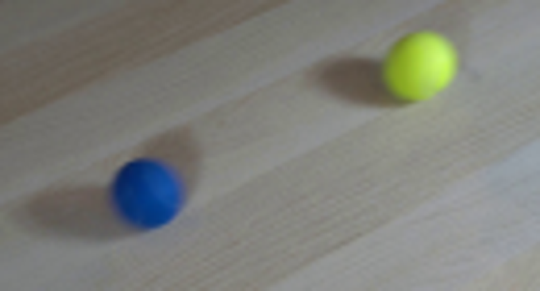
视觉工具实际返回图片 3
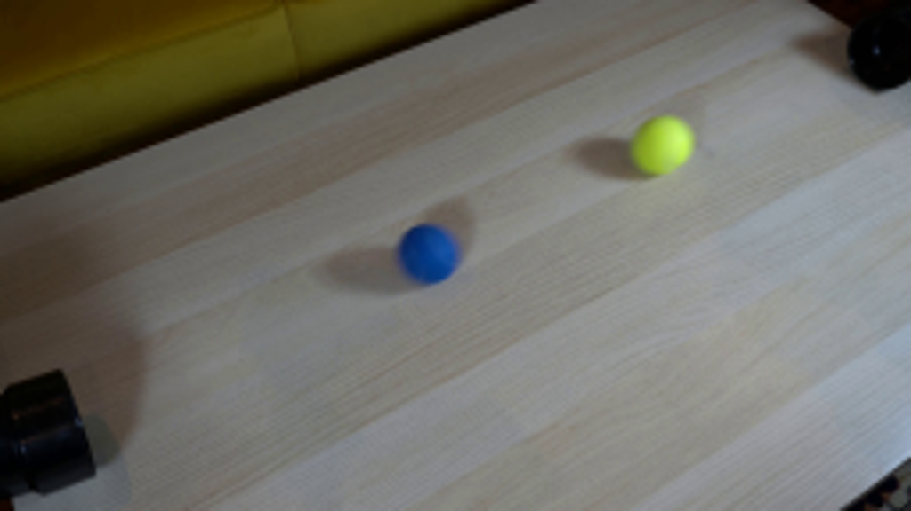
视觉工具实际返回图片 4

视觉工具实际返回图片 5

视觉工具实际返回图片 6
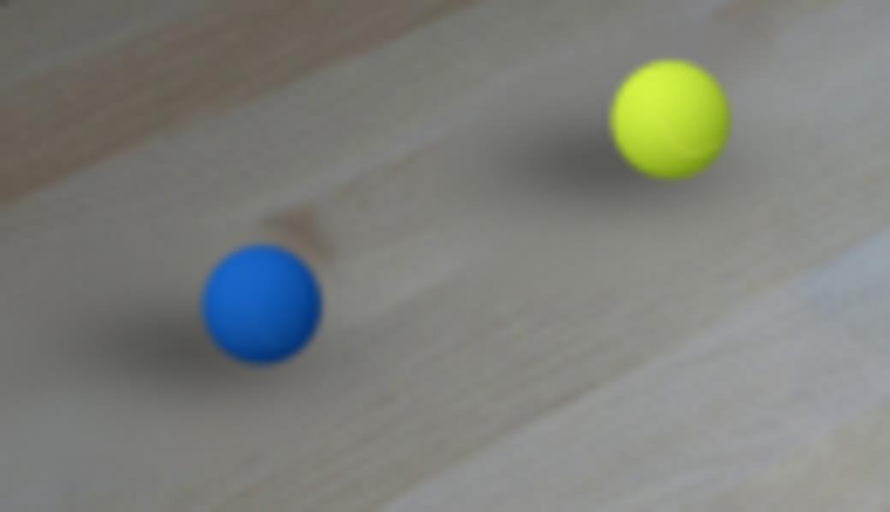
视觉工具实际返回图片 7
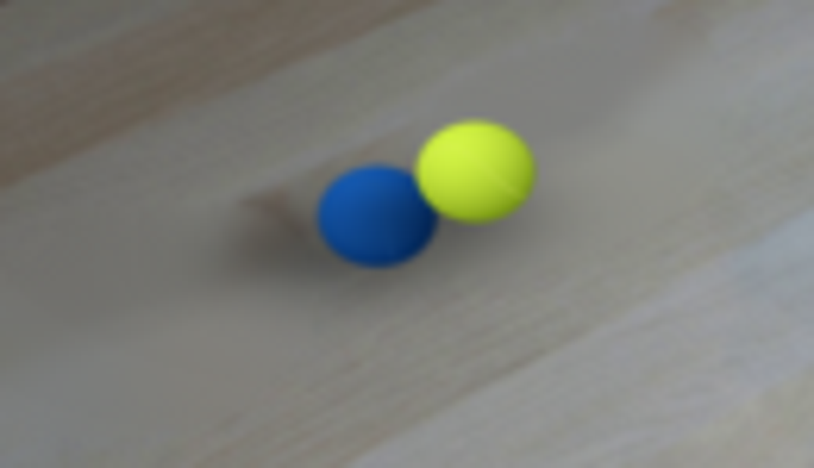
视觉工具实际返回图片 8
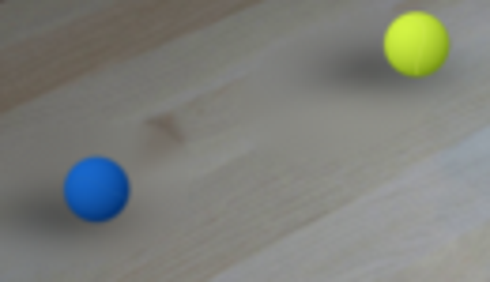
视觉工具实际返回图片 9
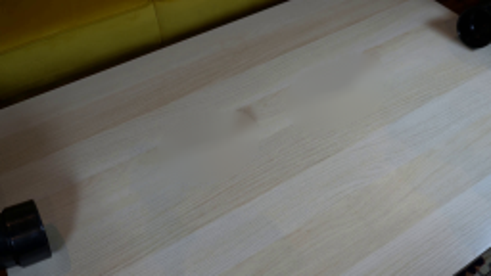
视觉工具实际返回图片 10
视觉工具实际返回图片 11
视觉工具实际返回图片 12
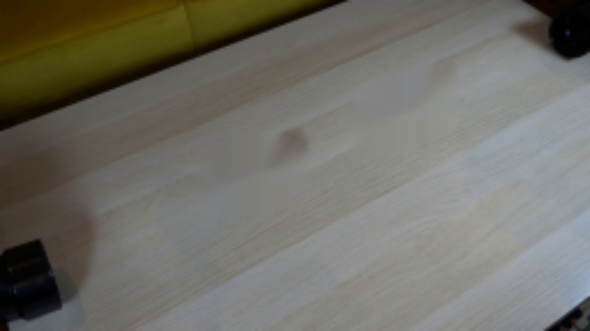
视觉工具实际返回图片 13
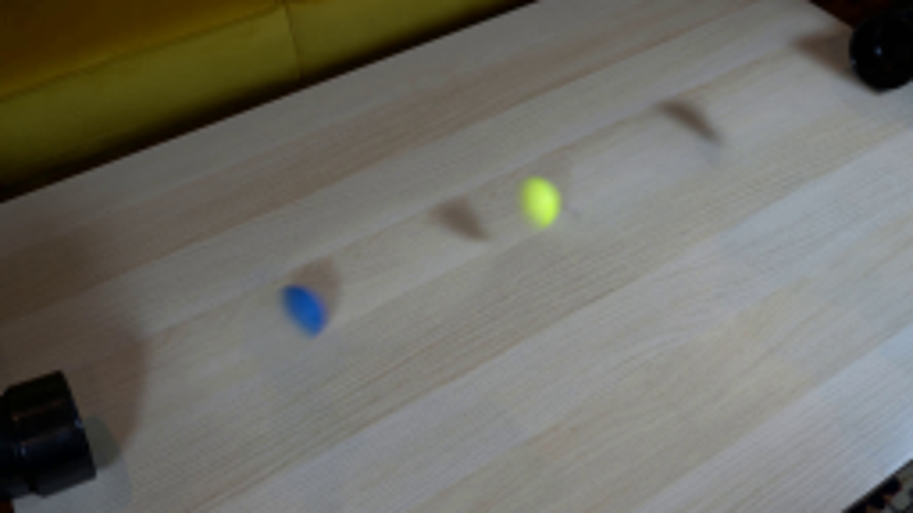
视觉工具实际返回图片 14
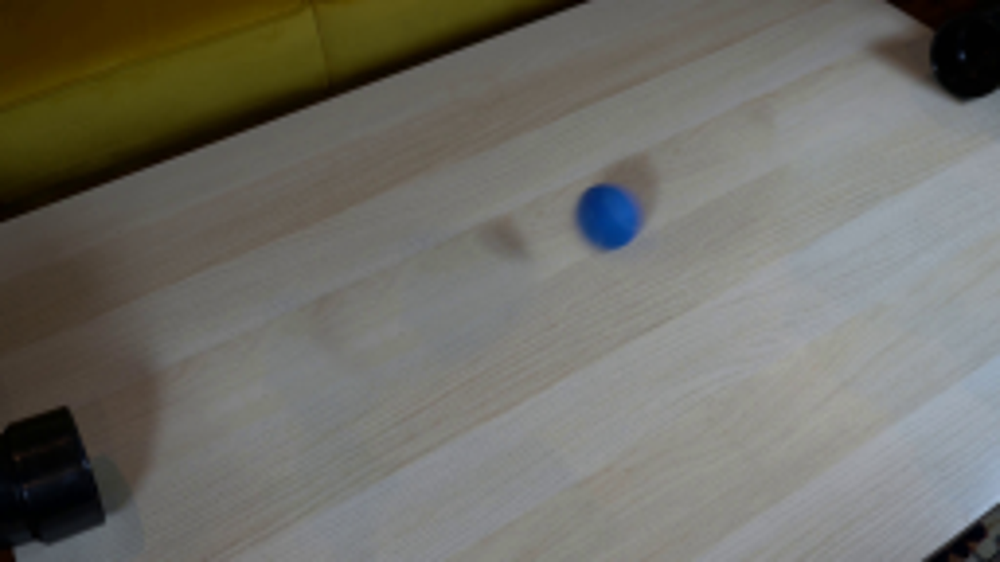
视觉工具实际返回图片 15
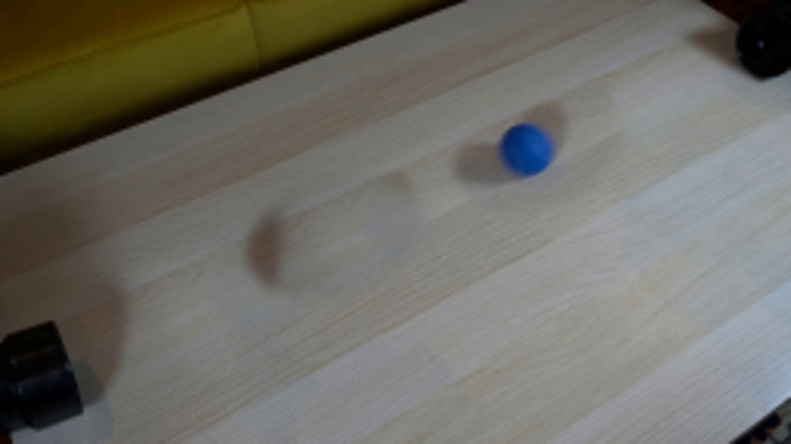
视觉工具实际返回图片 16
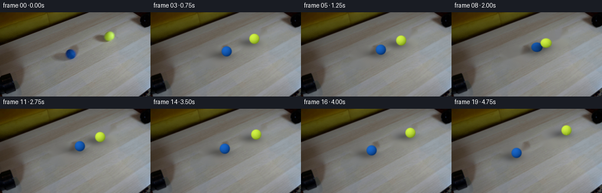
保存候选 3 份；完成命令 10 次；可验证图片返回 16 张。原始 API 响应与完整日志保留在本地。